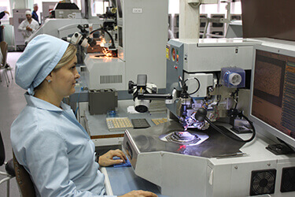

<section class="section section_second" id="connection_five">
	<div class="section__body">
		<div class="products">

			<div class="products__item popupes_fv">
				
			</div>
		</div>
	</div>
</section>
	<script>
			$(document).ready(function() {
				$(".popupes_fv").slick({
					slidesToShow: 1,
					slidesToScroll: 1,
					arrows: !0,
					fade: !0,
					asNavFor: ".connection_five"
				}) 
				$(".connection_five").slick({
					slidesToShow: 7,
					slidesToScroll: 1,
					asNavFor: ".popupes_fv",
					dots: !1,
					centerMode: !1,
					focusOnSelect: !0,
					centerMode: !0,
					responsive: [{
						breakpoint: 971,
						settings: {
							slidesToShow: 5
						}
					}, {
						breakpoint: 768,
						settings: {
							slidesToShow: 3,
							arrows: !1
						}
					}, {
						breakpoint: 521,
						settings: {
							slidesToShow: 2
						}
					}]
				})
			})
		</script>